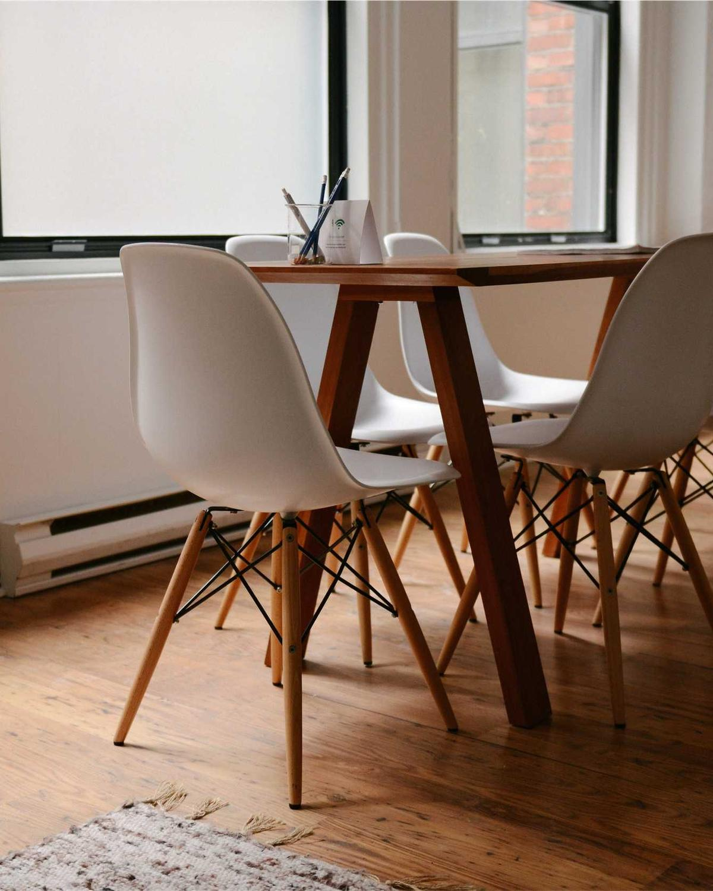

Every project, its owner, its risk and the numbers it moves, on the first screen you open.
AI operations workspace
Every handoff,automated.Every number,live.
VELTRIX brings projects, workflow automation, team conversation and business analytics into one AI-assisted workspace. Work moves between people and tools on its own, and you can see where everything stands without asking.
- Projects
- Automations
- Copilot
- Analytics
- Integrations
Revenue, 30 days$0+0%
On time0%0 pts
Automation runs0last 30 days
Active projects4
Q4 product launchAt risk
Website relaunchOn track
Acme Freight onboardingOn track
Support hiringBehind
Automation ran
Deal marked won → onboarding project created, Priya assigned
Copilot
Design QA is 3 screens from done. If it closes today, the launch email can still go out Thursday.
Revenue, 12 weeksSample
Operations break in the gaps between tools.
A project lives in one app, the conversation about it in another, the invoice in a third and the numbers in a spreadsheet someone updates on Fridays. Nobody owns the handoffs, so people chase them. VELTRIX closes those gaps: one workspace where the work, the rules that move it and the numbers it produces are the same thing.

- ProjectsBoards, timelines and owners that update when the work does.
- AutomationsPlain-language rules for every handoff, with a log of each run.
- CopilotAnswers about your operations, drawn from the workspace itself.
- AnalyticsRevenue, delivery and workload read from the work, not exports.
- IntegrationsTwo-way connections to the tools your team already uses.
From scattered to connected
- Seven tools, seven versions of the truth.Email, chat, a tracker, the CRM, calendars, docs and invoices each hold part of the picture.
- VELTRIX connects to each of them.Two-way links, so nothing has to be migrated on day one.
- Handoffs start running on rules.When something changes in one tool, the next step happens in another.
- Information falls into place.Updates are filed against the right project, owner and deadline.
- One workspace holds it all.The same tasks, people and numbers, in one place.
- Clarity, and control.You can see what is on track, what is at risk and what to do next.
VELTRIX
Work
People & time
Money
12 tasks on track1 at risk: Design QA3 rules runningNext: confirm QA by Thursday
Product tour
One workspace, six views of it.
Boards and timelines over the same tasks. Move a card and every view, report and rule follows.
Rules written in plain language, each run logged with what triggered it and what it did.
Ask a question about your operations and get an answer that points to the work it came from.
Revenue, delivery and cycle time calculated from the tasks and invoices themselves.
Who is on what this week, who is overloaded, and who has room.
Six views of one set of tasks, people and numbers. Change something once and it is current everywhere.
Northbeam OverviewMOLKJTOA
Revenue, 30 days$0
On-time delivery0%
Avg. cycle time0 d
Automation runs0
Projects
Q4 product launchAt risk62%
Website relaunchOn track42%
Acme Freight onboardingOn track88%
Support hiringBehind30%
Today
Onboarding rule ran for Acme Freight
Copilot flagged Design QA as the launch blocker
Invoice 2287 paid, milestone closed
Lena commented on Launch email
To do 3
Launch emailWaits on QALK
Q4 forecastFinanceOA
Press kitMarketingLK
In progress 2
Design QA, onboarding flow8 of 11 screensPR
Pricing page buildProductPR
Done 3
Vendor contractMO
Pricing copyLK
Support macrosJT
When a deal is won, open an onboarding projectCRM → VELTRIX → Chat · ran 9 times this month
OnWhen a task is 2 days late, tell the owner's leadVELTRIX → Chat · ran 14 times this month
OnWhen an invoice is paid, close the milestoneBilling → VELTRIX · ran 11 times this month
OnWhen a hire signs, create a first-week checklistHiring → VELTRIX · paused
PausedWhich project is most at risk this week?
Q4 product launch. Design QA has 3 screens left and the launch email waits on it. Closing QA by Thursday keeps the launch date.
Design QA taskLaunch timelineQA thread
Revenue, last 12 weeks$0
PRPriya R.37 h
LKLena K.28 h
MOMaya O.23 h
OAOmar A.18 h
JTJonas T.20 h
Priya is at 92% of capacity. Moving “Pricing page build” to Omar would bring her to 78%.
Workflow automation
Write the rule once. Watch every run.
Pick a sample automation, select any step to see how it is configured, then run it. The run is simulated in your browser; no tools are contacted.
Client onboardingReady
Run the sample to see each step execute here.
Copilot
Ask your operations a straight question.
Copilot answers from the projects, rules and numbers in your workspace, and shows where each answer came from. It drafts tasks and automations for you to approve; it never acts on its own.
- Find risks across projects
- Turn meeting notes into owned tasks
- Draft an automation from a sentence
- Summarise the week from what changed
Demo: scripted answers built from the sample workspace. No AI service is connected to this page.
CopilotNorthbeam · sample data
Analytics
Numbers that come from the work itself.
Every figure here is calculated from one sample dataset, so changing the range or the metric never contradicts another number on the page.
Sample dataset for the Northbeam demo workspace. Not customer data.
Solutions
Built around how your team actually works.
Four common ways teams use VELTRIX. Select one to see the work it organises and an example automation.

Integrations
Keep your tools. Connect the gaps.
The connectors below show the kinds of tools VELTRIX is designed to work with. Availability of specific connectors is to be confirmed.
No tools match that search.
Questions
Before you book a demo.
If your question isn't here, add it to the demo request and it will be covered on the call.
What exactly is VELTRIX?
An operations workspace that combines project management, workflow automation, team conversation and business analytics. The same tasks, people and numbers power every view, and an AI assistant helps you find risks, draft tasks and write automations.
Is the data on this page real?
No. Every project, person, figure and chart on this page belongs to a sample workspace called Northbeam, created for demonstration. The Copilot answers are scripted from that sample data, and the workflow runs are simulated in your browser.
Do we have to move off our current tools?
No. VELTRIX is designed to connect to the tools you already use, so conversations can stay in chat and deals in your CRM. The integrations section shows the kinds of tools it is built to connect with.
Does Copilot take actions on its own?
No. Copilot suggests and drafts: tasks from notes, rules from sentences, summaries from what changed. A person approves anything it creates.
What does pricing look like?
Pricing hasn't been published yet. Request a demo and it will be shared for your team size.
What happens after I request a demo?
On the live product site, the team would reply to arrange a walkthrough with your own workflows. On this page the form isn't connected to a backend yet, so it tells you plainly that nothing was sent.
See your own operations running in one place.
Tell us how your team works today. The walkthrough is built around your real handoffs, not a generic script.
- Tell us your stackThe tools and handoffs you want to connect first.
- One workflow gets mappedA real process of yours, drafted as VELTRIX rules.
- You see it runA walkthrough with that workflow running.